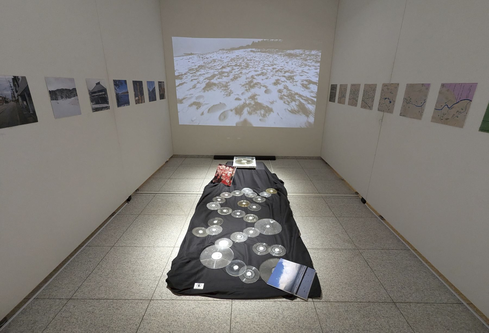

飴と潮騒
2025
本作品は、安曇野を縦断する塩の道（千国街道）と飴市を題材とし、塩飴をヒスイ海岸で練り、塩の道を通って安曇野に運ぶ映像と、ヒスイ海岸で練った塩飴で作ったレコードで構成されている。塩飴で作ったレコードにはヒスイ海岸の潮騒が録音されている。
塩の道は新潟県糸魚川から長野県松本までをつなぐ街道であり、かつて安曇野では塩の道を通り、塩を始めとする様々な物資が運び込まれていた。この運び込まれた物資は道中の様々な記憶を含んでいた。それらが売られる塩市では、物資と共に海や道中の思い出話も安曇野の人に話されていたのではないだろうか。現在では塩市は飴市となり、冬の伝統として受け継がれている。
そこで、私は思い出の要素である塩と飴を合わせて塩の道を通って安曇野に運ぶことで、再び安曇野に海や塩の道の記憶を届けることとした。ヒスイ海岸で塩と飴を合わせて練り塩飴を作る。それを、塩の道を通り運ぶことによって潮風や潮騒、冬の厳しい寒さを始めとする道中の様々な要素を取り込む。さらに、それをレコードに成形し、ヒスイ海岸の潮騒を刻み込むことによって、音としても安曇野にその記憶を伝える。
海や塩の道の記憶を潮騒と共に内包する塩飴のレコードからは、かつて塩の道を旅し、その回顧を安曇野の人に伝えていた歴史、温かみ、人間的な何かを感じられないだろうか。
This work is a site-specific sound installation created and exhibited in Azumino, Nagano, Japan in January 2025. This work is based on the history of the Salt Road in Azumino. The Salt Road was an old trade route that had been in use since before the Edo period (1603-1868). It was used to transport various goods including salt from the coastal city of Itoigawa in Niigata Prefecture to Azumino. These goods were sold at the market held at the beginning of the year called “Salt Market.” This “Salt Market” has now been renamed the “Candy Market” and is still being held today. It was not only goods exchanged at the Salt Market. Merchants who passed along the Salt Road would talk about the state of the sea that is not seen in Nagano Prefecture and their memories of the road. I created this work using these geographical and historical matters as the subject matter. I kneaded salt candy made from salt that was once handled in Itoigawa and candy made from rice produced in Azumino at the Hisui Beach in Itoigawa, the starting point of the Salt Road, and transported it along the Salt Road to Azumino. In addition, I molded this salt candy into records, and the waves at the Hisui Beach are recorded on it. The records have bubbles and cracks on their surface due to the air in the Hisui Beach. When the records are played back, the bubbles and cracks create a noise, and the sea roar and wind of the Hisui Beach can be heard. In the exhibition room, records made of salt candy and a record player were placed in the center, playing the waves recorded on the Hisui Beach. On the surrounding walls, a performance of kneading salt candy at the Hisui Beach and carrying it to Azumino is projected, along with record jackets depicting scenes of the current Salt Road and Candy Market, as well as maps of the Salt Road and a painting of the Salt Market from the Edo period. This work is an attempt to inhabit the memories of the Salt Road in an object and deliver them to Azumino.